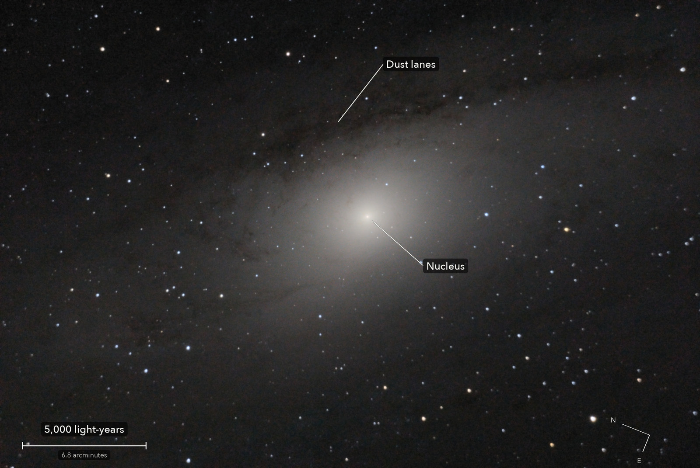

The core of the Andromeda Galaxy
Messier 31
The centre of the nearest big galaxy to our own, with the dark lanes of dust in its spiral arms. The glow is the light of billions of stars, too far away to see one by one.
What you are looking at

Swipe sideways to see the rest. Tap the picture for full size.
- Distance
- 2.5 million light-years
- This picture spans
- 28,000 light-years
- The light left
- 2.5 million years ago, when our ancestors were first making stone tools
- At its centre
- A black hole of over 100 million Suns
For photographers
7.5 minutes of light on one field, under a clear sky.
- Exposures
- 30 x 15 s at ISO 3200: 7.5 minutes
- Frames
- 33 taken, 30 kept. 2 were centring frames just after the slew, 1 smeared by the mount. Clear: the weights all between 0.97 and 1.04
- Sampling
- 0.776 arcsec per pixel: one pixel per 2 x 2 colour cell. Stars 4.5 arcsec wide (half-flux), 4.3 FWHM
- Field
- 38.3 x 25.6 arcmin: one sensor frame, in the camera's orientation (north to the left). M32 is 4.4 arcmin off the right edge
- When
- 8 October 2026, late evening, over 17 minutes. 75 to 79 degrees up, no Moon
- Field rotation
- 0.6 degrees over the run, corrected in registration
- Calibration
- No darks and no flat frames were taken. The flat is built from the open sky round M76, shot 25 to 55 minutes earlier with nothing moved but the mount; it agrees with the 3 October flat to 1 percent in green and blue. 50 dust shadows divided out
- Stacking
- RAW colour planes (no demosaic), hot pixels by 3 x 3 median, registered on stars with rotation, sigma-clipped weighted mean, one constant per frame. Noise 5.6 times lower than one frame (5.5 expected)
- Zero level
- The galaxy fills the frame, so the true sky cannot be measured: the darkest part of the field, 19.7 arcmin from the nucleus, is set to zero. Good to a few DN of a 99 DN sky
- Finish
- The camera's as-shot white balance, no colour matrix. Arcsinh stretch with the nucleus unclipped (250 of 255). Gamma 1.2, S-curve 0.45, saturation x 1.2. Faint glow made neutral, dark parts smoothed (bilateral, 2.5 px)
- Not used
- A deconvolved version, kept apart: stars 7 percent smaller, but a dark moat round every star and 34 percent more grain. The dust lanes are limited by noise, not blur
- Telescope
- Celestron 8SE Schmidt-Cassegrain: 203 mm aperture, 2,083 mm focal length by plate solve of this stack, f/10.3
- Camera
- Sony a6000, stock, at prime focus: APS-C 23.5 x 15.6 mm, 6000 x 4000, 3.9 micron pixels, RAW
- Mount
- Sky-Watcher EQ6-R, unguided. Set down without leveling, 13.4 degrees off the pole; aligned from four plate-solved photos, both axes driven from that model
© 2026 Brad Gessler · Celestron 8SE (8 inch, 2,082 mm) and Sony a6000 on an EQ6-R · San Francisco Bay Area · night of 8 October 2026
Capture and mount: Observatory (Elixir on a Raspberry Pi 3). Stacking: numpy, SciPy, OpenCV, rawpy. Plate solving: astrometry.net. Stacked from the camera's RAW frames. Nothing generated.
© 2026 Brad Gessler. The pictures and the words are his own; all rights reserved.